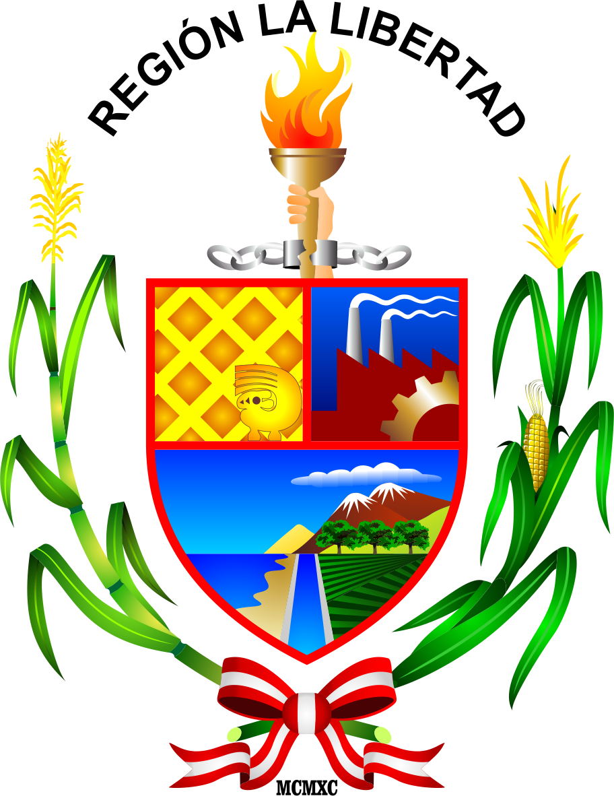
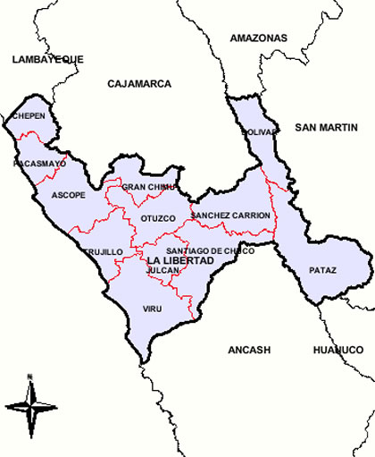

Restaurantes🍽️🍹
La 49 cafe : Tiene pocos años de instalado, pero se ha logrado posicionar cómo la mejor sanguchería de Pacasmayo, por la calidad de sus productos y el esmero que le pone Coqui de la Fuente y su esposa Atiende principalmente en el desayuno y en la noche. El sanguche de asado y de jamón son mis preferidos, especialmente el primero. Su local es pequeño, pero muy acogedor. Creo que tiene para largo en Pacasmayo.
El Hotel Central Pacasmayo
Se encuentra en Pacasmayo y ofrece alojamiento con bar y terraza. Cuenta con recepción 24 horas, salón compartido y WiFi gratuita en todas las instalaciones. Algunos alojamientos tienen balcón con vistas a la ciudad, turista S/100
Vuelos
Jorge Chavez:
Lima, PE (LIM) Trujillo, PE (TRU)
mar, 20/9 - mar, 27/9
JetSmart: ida y vuelta, turista
S/ 207
¿Que hacer en La libertad?
DESTINO MALABRIGO:
Ruta turística del Surf. Atractivo: Playa Malabrigo.
DESTINO PACASMAYO:
• Ruta "Tesoros del tiempo" Guadalupe. Atractivos: Sala Pakatnamú, Casa Museo "Albújar y Guarniz" y Capilla Oculta.
• Ruta "Olas y Sol Eterno". Atractivo: Playa Malecón Grau
MOTEL🏨
El Hotel Central Pacasmayo se encuentra en Pacasmayo y ofrece alojamiento con bar y terraza. Cuenta con recepción 24 horas, salón compartido y WiFi gratuita en todas las instalaciones. Algunos alojamientos tienen balcón con vistas a la ciudad.
Todas las habitaciones incluyen armario. Las habitaciones del Hotel Central Pacasmayo están equipadas con escritorio, TV de pantalla plana y baño privado.
Todas las mañanas se sirve un desayuno americano y a la carta.
El Hotel Central Pacasmayo se encuentra a 25 km de Chepén y a 33 km de Puerto Chicama. El aeropuerto más cercano es el aeropuerto internacional Capitán FAP José A Quinones Gonzales, a 77 km del hotel.
Hotel Central Pacasmayo recibe clientes de Booking.com desde el 13 dic 2021.
Saber precio
Nosotros
esta plataforma fue creada para la informacion de este lindo sobre el departamento de la libertad que se encuentra en el norte, aca le dejamos alguna informacion sobre los lugares turisticos de pacasmayo↙️

El escudo de La libertad
El emblema nació como símbolo de identificación de una nación que anhelaba verse desprovista de las cadenas de opresión y maltrato. El reconocido investigador Samuel Hoocker Noguera señala que el distintivo tenía características acordes con el álgido momento que atravesaba el continente americano.
Alcalde de la region La libertad
El candidato a la Alcaldía de la Municipalidad Provincial de Trujillo - que pertenece a la libertad (MPT) por Alianza Para el Progreso (APP), José Ruiz Vega, asegura tener la experiencia necesaria para administrar la ciudad y gestionar recursos para modernizarla. Cree que de ser elegido transformará a la ciudad.

Mapa de la libertad
Distritos de la provincias de Trujillo
-El Porvenir.
-Florencia de Mora.
-Huanchaco.
-La Esperanza.
-Laredo.
-Moche.
-Poroto.